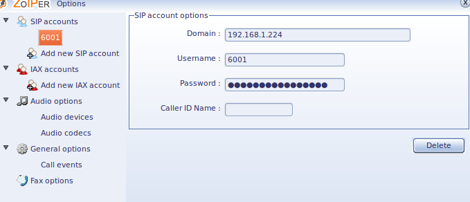
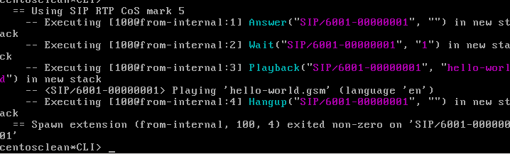

You've just installed Asterisk and you have read about basic configuration. Now let's quickly get a phone call working so you can get a taste for a simple phone call to Asterisk.
Hello World with Asterisk and SIP
Requirements
This tutorial assumes the following:
- You have a SIP phone plugged into the same LAN where the Asterisk server is plugged in, or can install the Zoiper softphone used in the example
- If you use your own hardware phone, we assume both the phone and Asterisk can reach each other and are on the same subnet.
- When you built Asterisk, you should have made sure to build the SIP channel driver you wanted to use, which may imply other requirements. For example if you want to use chan_pjsip, then make sure you followed the Installing pjproject guide.
Configuration files needed
You should have already run "make samples" if you installed from source, otherwise you may have the sample config files if you installed from packages.
If you have no configuration files in /etc/asterisk/ then grab the sample config files from the source directory by navigating to it and running "make samples".
Files needed for this example:
- asterisk.conf
- modules.conf
- extensions.conf
- sip.conf or pjsip.conf
You can use the defaults for asterisk.conf and modules.conf, we'll only need to modify extensions.conf and sip.conf or pjsip.conf.
To get started, go ahead and move to the /etc/asterisk/ directory where the files are located.
cd /etc/asterisk
Configure extensions.conf
Backup the sample extensions.conf and create a new one
mv extensions.conf extensions.sample vim extensions.conf
I'm assuming you use the VI/VIM editor here, after all, it is the best.
We are going to use a very simple dialplan. A dialplan is simply instructions telling Asterisk what to do with a call.
Edit your blank extensions.conf to reflect the following:
[from-internal] exten = 100,1,Answer() same = n,Wait(1) same = n,Playback(hello-world) same = n,Hangup()
When a phone dials extension 100, we are telling Asterisk to Answer the call, Wait one second, then Play (Playback) a sound file (hello-world) to the channel and Hangup.
Configure a SIP channel driver
Depending on the version of Asterisk in use, you may have the option of more than one SIP channel driver. You'll have to pick one to use for the example.
Follow the instructions below for the channel driver you chose.
Configure chan_sip
Backup and edit a new blank sip.conf, just like you did with extensions.conf.
Then add the following to your sip.conf file:
[general] context=default [6001] type=friend context=from-internal host=dynamic secret=unsecurepassword disallow=all allow=ulaw
Basic configuration will be explained in more detail in other sections of the wiki. For this example to work, just make sure you have everything exactly as written above. For the sake of terminology, it is useful to note that though we have this SIP configuration configured with "type=friend", most people refer to this as configuring a SIP peer.
Configure chan_pjsip
Backup and edit a new blank pjsip.conf, just like you did with extensions.conf.
Then add the following to your pjsip.conf file:
[transport-udp] type=transport protocol=udp bind=0.0.0.0 [6001] type=endpoint context=from-internal disallow=all allow=ulaw auth=6001 aors=6001 [6001] type=auth auth_type=userpass password=unsecurepassword username=6001 [6001] type=aor max_contacts=1
Configure your SIP phone
You can use any SIP phone you want of course, but for this demonstration we'll use Zoiper, a Softphone which just happens to be easily demonstrable.
You can find the latest version of Zoiper for your platform at their website. You can install it on the same system you are running Asterisk on, or it may make more sense to you if you install on another system on the same LAN (though you might find complication with software firewalls in that case).
Once you have Zoiper installed. Configure a new SIP account in Zoiper.
- Once Zoiper is opened, click the wrench icon to get to settings.
- Click "Add new SIP account"
- Enter 6001 for the account name, click OK
- Enter the IP address of your Asterisk system in the Domain field
- Enter 6001 in the Username field
- Enter your SIP peer's password in the Password field
- Enter whatever you like in Caller ID Name or leave it blank
- Click OK

Your results should look like the above screen shot.
Start Asterisk
Back at the Linux shell go ahead and start Asterisk. We'll start Asterisk with a control console (-c) and level 5 verbosity (vvvvv).
asterisk -cvvvvv
Or if Asterisk is already running, restart Asterisk from the shell and connect to it.
asterisk -rx "core restart now" asterisk -rvvvvv
Make the call
Go back to the main Zoiper interface, and make sure the account is registered. Select the account from the drop down list and click the Register button next to it. If it says registered, you are good to go. If it doesn't register, then double check your configuration.
Once registered, enter extension 100 and click the Dial button. The call should be made and you should hear the sound file hello-world!
On the Asterisk CLI, you should see something like:

Now that you have made a very simple call, you may want to start reading through the other sections on the wiki to learn more about Operation, Fundamentals and Configuration.
{kind=link}
{kind=link}